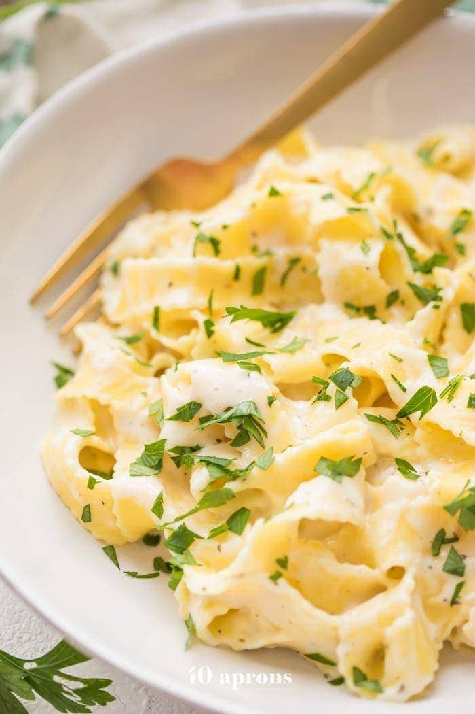

Creamy Cottage Cheese Pasta

Description
Pasta is a staple on a bulk. By making a sauce using cottage cheese, we can sneak in extra protein as well by maintaining the taste. I highly recommend to anyone who struggles w/ protein intake!
Ingredients
- 8oz pasta
- Milk
- Sharp cheddar
- Cottage cheese
- salt, pepper, chili powder
- Cornstarch
Steps
- Bring water to a boil then cook pasta according to directions
- Blend all of the sauce ingredients together.
- Put the sauce mixture in a pot and cook until it thickens a little bit.
- Mix the pasta into the sauce pot, stir and enjoy!
Back to home page